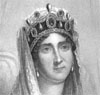
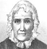
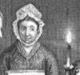
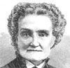
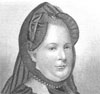
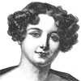
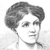
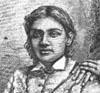

Alison Booth
Parton, James. Daughters of Genius: A Series of Sketches of Authors, Artists, Reformers, and Heroines, Queens, Princesses, and Women of Society, Women Eccentric and Peculiar, from the Most Recent and Authentic Sources. Illustrated. Philadelphia: Hubbard, 1885; 1886; 1888. New York: American, 1890.
TOC: Sally Bush; The Brontë Sisters; Queen Victoria; Elizabeth Barrett Browning; Mrs. Stowe and Uncle Tom's cabin; Miss Alcott; George Eliot; Princess Louise; Fanny Mendelssohn; Angelica Kaufmann; Baroness Burdett-Coutts; Girlhood of Queen Elizabeth; The Wife of Thomas Carlyle; The Wife of Benedict Arnold; Adelaide Procter; Lady Bloomfield; The Mother of Victor Hugo; Laura Bridgeman; The Wife of George Washington in her Workroom at Mount Vernon; Madame de Staël and Napoleon Bonaparte; The Wife of Frederick the Great; The Flight of Eugénie; Caroline Herschel; Charlotte Cushman; Maria Mitchell; Mrs. Trollope; Adelaide Phillips; Two Queens; the Daughters of James II of England; An Evening with Rachel; Josephine and Bonaparte; Lady Morgan; Maria Theresa; Lady Franklin; Madame de Miramion; Peg O'Neal; Mrs. L.M. Monmouth, and How She Lived on Forty Dollars a Year; Trial of Jeanne Darc, Commonly Called Joan of Arc; Harriet Martineau; The Wife of Lafayette; Betsy Patterson, Otherwise Madame Jerome Bonaparte of Baltimore; Some Ladies of the Old School; Toru Dutt; George Sand.
A series of close editions begins with Noted Women (Hartford: Phoenix, 1883). Daughters has identical Preface to Noted Women , crediting “my beloved niece, Miss Ethel Parton. Many of these articles I could not have done without her aid” (4), with the addition in Daughters : “The chapters on Queen Victoria and Elizabeth Barrett Browning, subsequently added, are from the pen of Prof. John P. Lamberton, of Philadelphia” (4). Subjects not in Noted Women : the Brontës, Victoria, E. B. Browning, George Sand, and Mrs. L. M. Monmouth and “Some Ladies of the Old School.” Parton [1822-1891] wrote numerous individual biographies of men, primarily American statesmen or military leaders; political commentaries; studies of comic literature; and various topical works ( Smoking and Drinking , 1868; A History of the Sewing Machine , 1867).
-
Josephine
-
Sally Bush
-
Sally Bush, Saturday Night
-
 Queen Victoria
Queen Victoria -
 Mrs. Harriet Beecher Stowe
Mrs. Harriet Beecher Stowe -
 Miss Louisa M. Alcott
Miss Louisa M. Alcott -
 Princess Louise
Princess Louise -
 Queen Elizabeth
Queen Elizabeth -
Adelaide Procter
-
 The Mother of Victor Hugo
The Mother of Victor Hugo -
 Madame de Stael
Madame de Stael -
Wife of Frederick the Great
-
Charlotte Cushman
-
 Maria Mitchell
Maria Mitchell -
 Adelaide Phillips
Adelaide Phillips -
Maria Theresa
-
Lady Franklin
-
 Joan of Arc
Joan of Arc -
Harriet Martineau
-
 Betsey Patterson
Betsey Patterson -
Toru Dutt and Sister
-
 George Sand
George Sand
Search OCLC WorldCat for this title.
Search Google Books for this title.